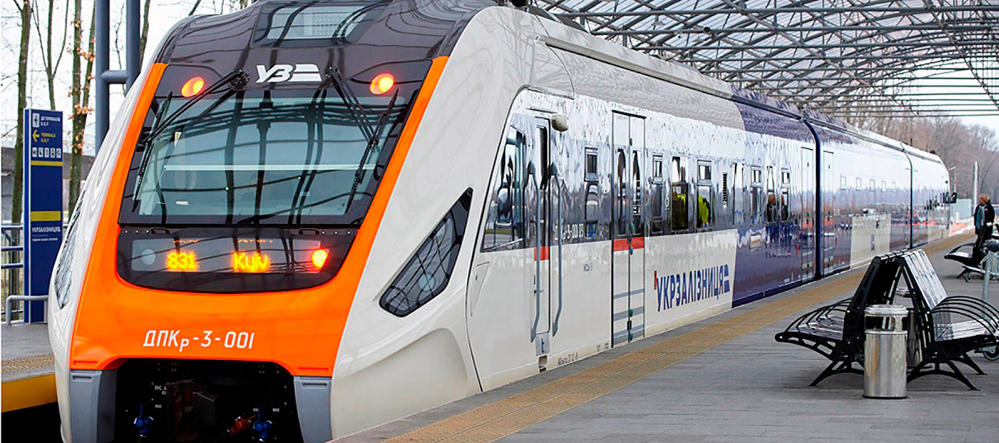

Укрзализныця возобновляет курсирование Слобожанского экспресса
01.05.2023

Сьогодні, 2 березня, Укрзалізниця відновлює курсування Слобожанського експреса.
Регіональний експрес №805/806 Харків — Суми — Конотоп вирушатиме з Харкова щоденно о 16:03, прибуватиме в Суми о 19:02 та в Конотоп о 21:08.
Зворотно, з Конотопа, поїзд вирушатиме щоденно о 04:44, прибуватиме до Сум о 06:49 та до Харкова о 09:51.
Поїзд матиме 8 зупинок, у тому числі у Люботині, Тростянці, Білопіллі та Ворожбі.
На маршруті курсуватиме комфортний дизель-поїзд ДПКр-3, який вже пройшов плановий ремонт та повертається на свій маршрут.